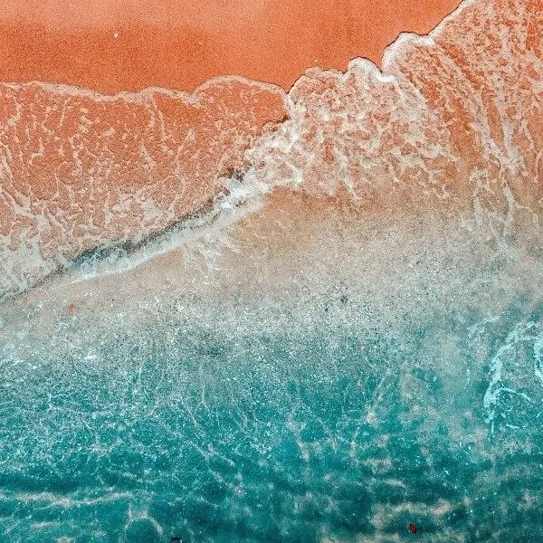
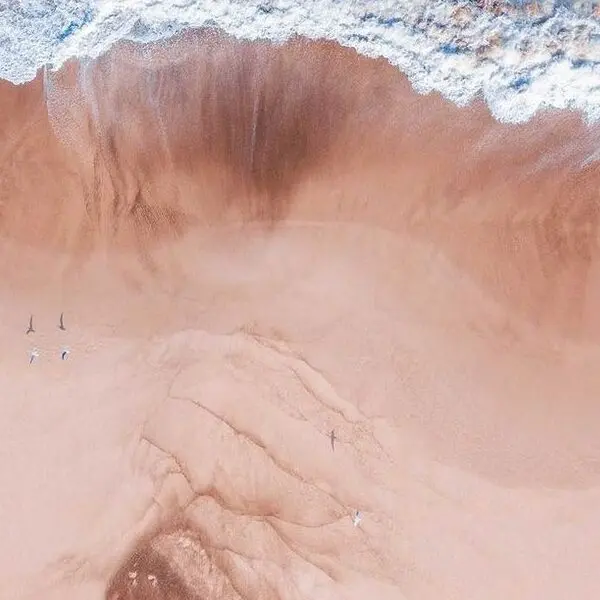

Planejamento e produção de eventos
Conceito, organização e execução de eventos pensados para o seu público e para os objetivos do projeto.

Rio de Janeiro · Eventos, bem-estar e relacionamento
Criamos eventos e experiências de relacionamento e bem-estar que aproximam profissionais da saúde, marcas e comunidades.


Quem somos
A Mar Conexões foi fundada por Marjana e Raquel. Conectamos marcas, profissionais da saúde e pessoas por meio de eventos, experiências de relacionamento, lifestyle e bem-estar.
Nosso propósito é transformar encontros em experiências com conexão, pertencimento e atenção aos detalhes. Atuamos no Rio de Janeiro, com perspectiva de expansão nacional.

Conexão, pertencimento e atenção aos detalhes.
Nossos serviços
Conceito, organização e execução de eventos pensados para o seu público e para os objetivos do projeto.

Encontros que valorizam convivência, qualidade de vida e comunidade.

Desenvolvimento de propostas de patrocínio e experiências alinhadas ao público.

Planejamento e criação de conteúdo para Instagram e TikTok, integrado aos objetivos de cada projeto.
Para quem criamos
Como trabalhamos
 1
1
Entendemos o objetivo e o público.
 2
2
Desenhamos a experiência.
Planejamos e coordenamos a execução.

4Acompanhamos as entregas e reunimos aprendizados.
Contato
Conte para a gente o seu projeto. Será um prazer entender o seu objetivo e pensar, juntos, em uma experiência que faça sentido para o seu público.
Nossos canais de contato serão divulgados aqui em breve.